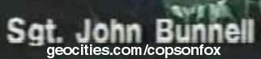

If you are looking for episodes or specials on DVD then email
me.
Biography |
Resume |
Pictures
John Edwin Bunnell was born on May 25, 1944 in Pendleton, Oregon during World War II, but he didn't become a star until 1989 when he appeared in the second season of Cops. He joined the Multnomah County Sheriff's Office in 1969. When he appeared on Cops he was a Sgt. and rose through the ranks to become Chief Deputy. When Sheriff Robert G. Skipper retired in 1994 before the end of his term, he appointed Bunnell to head the agency. Bunnell took the oath of office on November 30, 1994. He retired 6 months later in May 1995 (though on Police Videos he said he was in law enforcement 25 or 27 years). He appeared in 10 episodes of Cops, a record number of appearances that hasn't been beat in 21 seasons. He stood out right away with his extremely white teeth, extra tan skin, dark sunglasses, lush combed back silver hair, take charge persona and wise cracking mouth. He was fun to watch, had star quality and became the first and only breakout star on the show. In 1991 he hosted episodes of American Detective. In 1997 he was free to pursue TV full time and played himself as the host of Fox hour long specials called the World's Scariest Police Chases starting with the second one. The next year he also hosted The World's Wildest Police Videos, later just Police Videos, from 1998 to 2002. On Thursday nights right after Police Videos he sometimes hosted another special for 2 hours a night of Bunnell. In 2001 he made his debut in a movie called Ghost World playing Seymour's Boss and 2 years later he played the police chief in Bad Santa. Both are directed by Terry Zwigoff. He appeared on Maury and a Cops special in 2005. He did not appear again until 2008 when he appeared in two long commercials for ID Watchdog an identity theft protection company.
| Title | Year(s) |
| Cops - Episodes 201-5, 207, 209-11/13, S907, 2037 | 1989-07 |
| American Detective | 1991 |
| Cops Funniest Moments VHS | 1996 |
| Cops War on Drugs VHS | 1996 |
| World's Scariest Police Chases 2 | 4/97 |
| World’s Scariest Police Shootouts | 5/15/97 |
| Riots: Mobs Out of Control | 6/97 |
| World's Scariest Police Chases 3 | 10/97 |
| World's Scariest Police Stings | 11/20/97 |
| World's Scariest Police Chases 4 | 2/98 |
| Surviving the Moment of Impact 1 | 2/98 |
| Surviving the Moment of Impact 2 | 4/98 |
| World's Wildest Police Videos - 61 episodes | 4/98-02 |
| World's Scariest Police Shootouts 2 | 4/23/98 |
| World's Scariest Police Chases 5 | 5/98 |
| World’s Worst Drivers Caught on Tape 1 | 6/98 |
| World’s Worst Drivers Caught on Tape 2 | 11/98 |
| World’s Most Shocking Moments Caught on Tape 1 | 11/5/98 |
| World’s Most Shocking Moments Caught on Tape 2 | 2/4/99 |
| Surviving the Moment of Impact 3 | 2/99 |
| Train Wrecks | 5/99 |
| World's Most Shocking Moments Caught on Tape 3 | 5/25/99 |
| Tickets in America AKA Getting a Ticket in America | 1/6/00 |
| World’s Worst Drivers Caught on Tape 3 | 2001 |
| Surviving the Moment of Impact 4 | 5/01 |
| Ghost World | 6/01 |
| World’s Craziest Police Chases | 2002 |
| World's Fastest Police Chases | 2002 |
| World’s Most Dangerous Chases | 2002 |
| Bad Santa | 11/03 |
| Maury Povich - Peeping Toms and Voyeurs | 2/9/05 |
| VH1 Goes Inside Cops | 2/19/05 |
| Cops 20th Anniversary DVD | 2/08 |
| ID Watchdog Commercial 1 | 4/08 |
| ID Watchdog Commercial 2 | 9/08 |
Cops Episode
#201 - John's first appearance next to a T&A wall
Intro of Surviving the Moment of Impact 1
Intro of
Surviving the Moment of Impact 2
Intro of
Surviving the Moment of Impact 3
Intro of
Surviving the Moment of Impact 4
© 2001-09 Thrawn for Cops on Fox